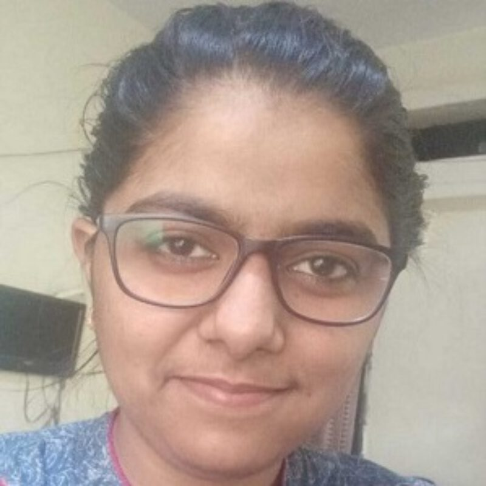

Participants
This page is under development - confirmed participants will be added here.
Participants with an asterisk are participating remotely.
R Core Team

Robert Gentleman

Tomas Kalibera

Michael Lawrence

Uwe Ligges
Dortmund University

Thomas Lumley
University of Auckland

Martin Mächler

Sebastian Meyer
Friedrich-Alexander-Universität Erlangen-Nürnberg


Paul Murrell*
The University of Auckland

Deepayan Sarkar

Luke Tierney

Simon Urbanek
R Contributors

Malcolm Barrett
Posit

Elio Campitelli
University of Buenos Aires

Michael Chirico
Google

Gergely Daroczi
Rx Studio

Neeraj Dhanraj Bokde
Aarhus University
Hannah Frick
Posit

Jonathan Godfrey
Massey University
Geraldine Gomez
Pontificia Universidad Javeriana

Paola Corrales
UBA-CIMA-CONICET

André Gillibert
CHU Rouen

Siyao (Jane) He*
University of California, Irvine

Lionel Henry
Posit

Renata Hirota
Brazilian Jurimetrics Association

Erin Hodgess
Western Governors University

Binod Jung Bogati
R User Group Nepal

Asma Kacem
Software Engineer Intern

Saranjeet Kaur Bhogal
Research Software Alliance, Software Sustainability Institute

Ella Kaye
University of Warwick

Ivan Krylov*
Lomonosov Moscow State University

Trang Le
Bristol Myers Squibb
Caio Lente
Curso-R

Balasubramanian Narasimhan
Stanford University

María Cristina Nanton
University of Buenos Aires
Hanne Oberman
Utrecht University

Ezekiel Adebayo Ogundepo
54gene Limited

Reiko Okamoto
National Research Council Canada


Shannon Pileggi
The Prostate Cancer Clinical Trials Consortium

George Stagg
Posit


Heather Turner
University of Warwick


Ben Ubah
cynkra

Roberto Villegas-Diaz
University of Liverpool